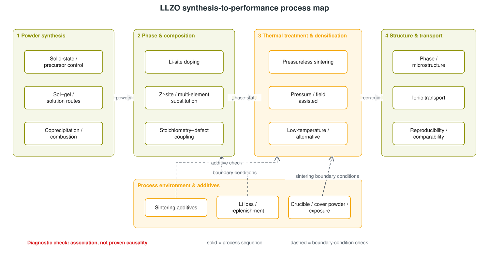

From Powder to Comparable Transport Data:
A Faceted Review of LLZO Synthesis, Phase Control, and Densification
Jing Gao and Yufeng Li — Shanghai Jiao Tong University — doctoral researchers
Dingyang Lü — University of Chinese Academy of Sciences — doctoral researcher
Abstract
Garnet-type Li7La3Zr2O12 (LLZO) is discussed through processing routes, substitutions, firing schedules, environmental controls, and transport measurements that are often reported in incompatible combinations. This review maps 46 audited bibliographic records into an evidence-limited process chain: powder synthesis, phase/composition control, thermal treatment and densification, and structure/transport readout. Composition, lithium inventory, additives, and process environment are treated as cross-cutting modifiers rather than serial stages. A separate evidence facet defines the minimum record needed to classify two results as directly comparable, parallel qualitative evidence, or insufficiently specified. The collection is standard-scale, not comprehensive: 25 records include locally stored abstracts, 21 are title-only, and full-text checks were selective. Six research gaps are framed as limitations of discrimination in this collection and paired with falsifiable next actions. A precursor-ranking diagnostic reports the actual model Top-5 only as ranked sets, preserves entity-normalization warnings, and remains unverified and not for laboratory use.
1. Introduction
LLZO research links a nominal garnet composition to several questions: how a precursor mixture becomes a powder, how composition and substitution relate to phase state, how a powder becomes a ceramic, and how the specimen is measured. An audited overview likewise spans crystal structure, preparation, doping, and conductivity rather than treating synthesis as an isolated operation [1]. The challenge is that labels such as “solid state,” “sol–gel,” or “spark plasma sintering” rarely specify the full chain that determines what is compared.
Stored abstracts illustrate the coupling without licensing a universal mechanism. A solid-state study reports sensitivity to lithium inventory and powder geometry [9]; a solution-based study focuses on precursor homogeneity and compositional evolution [27]; and a densification study brings particle-size distribution, heating schedule, support geometry, spatial uniformity, and transport into one case [31]. A route-only catalogue therefore hides variables that move together.
This review contributes an A+B+C bundle. A is a faceted process framework: powder synthesis → phase/composition control → thermal treatment/densification → structure/transport readout. Composition and environment remain modifiers. B is a minimum comparability record that keeps composition, precursors, thermal history, environment, structure, transport definition, and replication together. C is a problem map in which every gap has an evidence limitation and a falsifiable next action. The aim is not a performance leaderboard.
2. Scope, evidence method, and comparison rules
The evidence base is the exact audited 46-entry library. Twenty-five local records contain abstracts; 21 contain titles and bibliographic metadata only. An abstract-bearing record supports a statement only when that statement is represented in the stored abstract. A title-only record establishes topic coverage but not temperatures, values, mechanisms, or superiority. No section implies exhaustive full-text verification.
The collection includes a route comparison [45], a hot-pressing study with density and transport readouts [20], a crucible and exposure comparison [17], and studies reporting phase, density, microstructure, and transport together [32, 26]. They motivate the fields below; they do not establish identical measurement practice.
| Block | Required fields | Decision use |
|---|---|---|
| Composition and powder | Nominal/measured composition; dopant; precursors; Li excess; mixing; route | Separates formulation from process and preserves NR. |
| Thermal and environment | Calcination/sintering temperature and time; ramp; pressure/field; atmosphere; cover; crucible; additive | Prevents a route name from replacing a complete boundary condition. |
| Structure | Phase method; density and basis; grains, boundaries, porosity | Separates achieved density from an asserted mechanism. |
| Transport | Total/bulk/grain-boundary quantity; temperature; electrodes; activation-energy convention | Blocks numerical comparison across unlike observables. |
| Reproducibility | Batch count; spatial sampling; geometry; uncertainty | Distinguishes one specimen from repeatability evidence. |
| Provenance | Title, stored abstract, local excerpt, or checked full text | Caps claim strength at the inspected evidence level. |
Results are directly comparable only when relevant fields match or are deliberately controlled. Parallel qualitative evidence applies when a known composition, process, or measurement field differs. Insufficient fields applies when an unavailable field could change interpretation. Missing metadata are missing evidence, not proof of experimental absence.
3. Faceted framework
The framework is faceted, not a single MECE tree. P1 covers solid-state, solution-mediated, and coprecipitation/combustion powder routes. P2 separates Li-sublattice substitution, Zr-site/multi-element substitution, and stoichiometry/defect/phase questions. P3 separates pressureless schedules, assisted or ultrafast methods, and low-temperature/additive-assisted densification. P4 contains phase/microstructure and transport readouts. A modifier facet records dopant identity, lithium inventory, process environment, exposure, and additives. An evidence facet records what must be available before comparison.

A computational abstract examines native defects across synthesis conditions and challenges a universal simple vacancy-compensation assumption [5]. Title-only records anchor gallium-associated cubic-phase stabilization [2], lithium stoichiometry in tetragonal LLZO [33], and synthesis/thermodynamics [35]; no occupancy, transition value, or mechanism is inferred from those titles.
4. Powder-synthesis routes
Solid-state reaction and precursor control
An early title anchors cubic-LLZO solid-state synthesis [36], while an abstract-bearing Al-LLZO study reports lithium-inventory and powder-geometry sensitivity within its route [9]. A stored abstract compares monoclinic and tetragonal zirconia precursors under a common reported path and includes phase and transport readouts [39]. In situ neutron diffraction is reported as tracking formation and identifying precursor-state and cooling-history features [44]. Generalization beyond those studied conditions requires full text.
Solution-mediated and chelation routes
Title-level records establish nitrogen-free sol–gel preparation of Al-substituted LLZO [4] and sol–gel synthesis with conductivity measurement [37], but not comparative advantage. Abstract-bearing records describe solution powder followed by pressure-assisted densification [38], a solid-state/sol–gel comparison with and without Al [45], and a PVP-chelated route reporting cubic LLZO together with a secondary phase and impedance result [46].
Coprecipitation, combustion, and rapid formation
Coprecipitation, low-temperature powder processing, and microwave-assisted solution combustion are represented locally by title-only records [40, 43, 42]. A nonaqueous polymer-combustion abstract follows undoped and Ta-containing nanopowders into sintering and transport characterization [41]. Across all P1 branches, a route comparison must also preserve composition, thermal budget, shaping, density, and transport definition.
5. Composition and phase stabilization
Title-level studies are framed around Ga addition and cubic stabilization [2], Ga substitution and grain coarsening [10], and lithium volatilization with phase change during Al-containing LLZO processing [3]. They locate different control objects but do not establish site occupancy or causality here.
The defect-calculation abstract reports conditional native-defect and doping responses rather than one universal lithium-vacancy rule [5]. Experimental abstracts associate precursor homogeneity with compositional/structural evolution [27], report phase/density/microstructure/transport for Nb-containing garnet [32], and report multiple outcomes for AlN addition to Ta-containing garnet [6]. Detailed mediation remains unverified.
A dual-substitution paper also names spark plasma sintering in its title [12], making single-variable attribution inappropriate without full context. Title-only lithium-stoichiometry and lithium-excess records map inventory coverage but not effect direction [33, 34]. Nominal composition, measured composition, starting excess, firing-stage supply, phase method, and all downstream conditions must remain distinct.
6. Thermal treatment and densification
Pressureless firing includes title-level shaping-plus-sintering work [7], an abstract-bearing dwell/lithium-inventory case [8], and oxygen-assisted firing with several readouts [21]. Uniform densification is also reported as depending on particle distribution, heating, and support geometry within one abstract [31].
Title-level records establish SPS-mechanism, field-assisted, rapid ultra-high-temperature, and ultrafast branches [16, 19, 11, 14], not efficiency or performance rankings. Abstracts permit bounded within-study comparisons of solid-state/SPS/post-treatment routes [15] and a hot-pressing series with density and transport partition [20].
Cold sintering is reported for an LLZO-based composite rather than silently normalized to monolithic LLZO [24]. SiO2, CuO, and Li5AlO4 abstracts report combinations of lower-temperature processing, densification, boundary interpretation, transport, or cell readouts [22, 25, 29]. Achieved density is kept separate from the mechanism proposed to explain it.
7. Cross-cutting environment and additives
A stored abstract compares alumina and platinum crucibles with composition, density, conductivity, and exposure readouts [17]. A title-only record concerns alumina-crucible contamination associated with extra lithium carbonate [30]. Starting excess must be separated from lithium activity supplied or lost during firing: the collection includes a title on Li2O-atmosphere manipulation [18], an abstract on LiOH-containing cover material [26], and an abstract screening lithium-containing cover powders [28].
Lithium–proton exchange is presented in one abstract as a reproducible-processing variable [23], motivating records of humidity, exposure time, storage, surface treatment, and delay before measurement. Additive studies associate sintering aids with microstructure or transport at title level [13] and report multi-outcome SiO2, CuO, AlN, or Li5AlO4 cases at abstract level [22, 25, 6, 29]. Additive identity, lithium supply, reaction products, density, and boundary response remain possible co-mediators.
8. Structure–transport evidence and minimum comparability
Study-specific covariation does not justify the shortcut “denser means more conductive.” Hot pressing, submicron powder, and crucible studies each report density alongside transport and other structural or compositional fields [20, 32, 17]. Relative density does not uniquely encode pore location, boundary chemistry, exposure, or uniformity; the uniform-densification abstract explicitly combines microscopic and macroscopic observations [31].
Total, bulk, and grain-boundary conductivity are retained as different observables. Test temperature, electrodes, specimen geometry, frequency range, fitting choice, and activation-energy convention remain part of interpretation. The cover-powder abstract is useful because it identifies total conductivity and activation energy alongside density and boundary composition [26]; this does not make its values comparable to a record with different or unavailable fields.
- Establish composition and provenance.
- Establish precursor, powder, shaping, and complete thermal/environment history.
- Establish phase, density basis, microstructure, spatial sampling, and exposure.
- Establish transport type, temperature, electrodes, analysis, replicates, and uncertainty.
The output is categorical rather than scored: directly comparable, parallel qualitative evidence, or insufficiently specified. Contribution B is therefore the decision layer attached to Contribution A's map; Contribution C uses the same fields to explain why a gap remains unresolved.
9. Six evidence-bounded research gaps
These are gaps in discrimination within this collection, not claims that the field has never performed an experiment.
1. Precursor homogeneity versus powder route
Abstracts on precursor homogeneity, route comparison, and solid-state processing do not establish a common-powder, matched-composition, matched-thermal-budget comparison with shared replication [27, 45, 9]. A one-lot factorial route/mixing study could hold composition, shaping, and firing fixed. The hypothesis that improved homogeneity reduces dispersion would be falsified if a prespecified dispersion measure were not lower than the matched control.
2. Starting lithium versus firing-stage supply
Starting inventory, dwell, geometry, and cover supply remain coupled across the checked abstracts [9, 8, 26]. A two-by-two excess/cover design on one powder could test the interaction. The interaction explanation would be falsified if its preregistered term were indistinguishable from zero within declared uncertainty.
3. Additive densification versus boundary mediation
SiO2, Li5AlO4, and AlN abstracts move additive identity, products, density, and transport together [22, 29, 6]. An additive-free control and dose series with density matching and separated boundary response could test mediation. The explanation fails if the declared boundary signature is absent or does not covary after density is accounted for.
4. Fair comparison of densification technologies
Abstract-level SPS and hot-press cases cannot be ranked against a title-only ultrafast record across unlike powders and conditions [15, 20, 14]. A shared powder, target density, geometry, and impedance protocol could test equivalence. Acceleration would fail the working equivalence hypothesis if it fell outside a predeclared margin.
5. Exposure history as a reproducibility variable
Crucible/exposure, lithium–proton exchange, and precursor-reproducibility abstracts do not supply one shared humidity/storage/pre-measurement block [17, 23, 27]. Replicates assigned to predeclared humidity–time histories could test the pattern. The hypothesis fails if neither surface-state metric nor transport changes systematically.
6. Interlaboratory density and conductivity record
Uniformity, submicron-powder, and route-comparison abstracts expose relevant fields but are not an interlaboratory round robin [31, 32, 45]. A blind comparison on shared pellets and powder could partition specimen, analysis, and reporting dispersion. Harmonization would fail the hypothesis if the preregistered between-laboratory variance component did not decrease.
10. Model-assisted precursor diagnostic
General LLZO preparation literature supplies context for precursor control [1, 9]; it does not validate the following sets.
MODEL-ASSISTED PRECURSOR DIAGNOSTIC — INFRASTRUCTURE DEMONSTRATION ONLY
CHEMICAL ROUTES UNVERIFIED — NOT FOR LAB USE
Target: Li7La3Zr2O12. Actual model-ranked sets:
- ZrO2 + La2O3 + Li2CO3 (Top-1)
- ZrO2 + La2O3 + LiHO
- ZrO2 + Li2CO3 + La(HO)3
- ZrO2 + La2O3 + Li2CO3 + LiHO
- ZrO2 + LiHO + La(HO)3
LiHO and La(HO)3 are nomenclature/entity-normalization warnings. Status: model_output_verified=true; chemical_route_verified=false; conditions=null. Scores are not reaction-success probabilities. No set is a chemistry recommendation; no experimental conditions are supplied. Human evidence, entity, hazard, and waste review would be mandatory before an experimental plan could exist. NOT FOR LAB USE.
Raw provenance: data/retro_llzo_top5.json and data/experiment_llzo_diagnostic.json. Reviewer issue I4 remains open.
11. Limitations
This is a standard-scale evidence-mapped review, not a comprehensive or systematic review. Metadata integrity does not validate claim context. The small recent subset does not establish current coverage, and the condition-preserving matrix is not a numerical meta-analysis. Missing fields are unavailable evidence, not experimental absence. The process map encodes navigation and boundary checks, not causality. The precursor diagnostic is verified only as software output, with unverified chemistry, null conditions, and open issue I4.
12. Conclusion
LLZO processing is read most faithfully as a primary process chain with cross-cutting composition and environment modifiers plus a separate evidence facet. The minimum record classifies results as directly comparable, parallel qualitative evidence, or insufficiently specified. The six-gap map prioritizes controlled discrimination: separating starting lithium from firing-boundary supply, separating density mediation from additive-related boundary chemistry, and harmonizing structure/transport records across specimens and laboratories.
These conclusions are calibrated to 46 audited records and selective abstract-level evidence. They do not rank a universally superior route. Contributions A+B+C instead expose what was varied, what was measured, what traveled with the intervention, and what observation could overturn a working explanation.
References
- M. M. Raju, F. Altayran, M. E. Johnson, D. Wang, and Q. Zhang. “Crystal Structure and Preparation of Li7La3Zr2O12 (LLZO) Solid-State Electrolyte and Doping Impacts on the Conductivity: An Overview.” Electrochem (2021). doi:10.3390/electrochem2030026.
- H. El Shinawi and J. Janek. “Stabilization of cubic lithium-stuffed garnets of the type Li7La3Zr2O12 by addition of gallium.” Journal of Power Sources (2013). doi:10.1016/j.jpowsour.2012.09.111.
- S. T. Montoya, S. A. H. Shanto, and R. A. Walker. “Lithium Volatilization and Phase Changes during Aluminum-Doped Cubic Li6.25La3Zr2Al0.25O12 (c-LLZO) Processing.” Crystals (2024). doi:10.3390/cryst14090795.
- N. Rosenkiewitz, J. Schuhmacher, M. Bockmeyer, and J. Deubener. “Nitrogen-free sol–gel synthesis of Al-substituted cubic garnet Li7La3Zr2O12 (LLZO).” Journal of Power Sources (2015). doi:10.1016/j.jpowsour.2014.12.066.
- A. G. Squires, D. O. Scanlon, and B. J. Morgan. “Native Defects and Their Doping Response in the Lithium Solid Electrolyte Li7La3Zr2O12.” Chemistry of Materials (2019). doi:10.1021/acs.chemmater.9b04319.
- C. Zhang, X. Hu, Z. Nie, C. Wu, N. Zheng, S. Chen, Y. Yang, R. Wei, J. Yu, N. Yang, Y. Yu, and W. Liu. “High-performance Ta-doped Li7La3Zr2O12 garnet oxides with AlN additive.” Journal of Advanced Ceramics (2022). doi:10.1007/s40145-022-0626-y.
- C. Lei, D. K. Shetty, M. F. Simpson, and A. V. Virkar. “Fabrication of high-density and translucent Al-containing garnet, Li7−xLa3Zr2−xTaxO12 (LLZTO) solid-state electrolyte by pressure filtration and sintering.” Solid State Ionics (2021). doi:10.1016/j.ssi.2021.115640.
- C. Schwab, G. Häuschen, M. Mann, C. Roitzheim, O. Guillon, D. Fattakhova-Rohlfing, and M. Finsterbusch. “Towards economic processing of high performance garnets – case study on zero Li excess Ga-substituted LLZO.” Journal of Materials Chemistry A (2023). doi:10.1039/d2ta09250f.
- S. Heywood, M. Lessmeier, D. R. Driscoll, and S. W. Sofie. “Tailoring solid-state synthesis routes for high confidence production of phase pure, low impedance Al-LLZO.” Journal of the American Ceramic Society (2023). doi:10.1111/jace.18994.
- C. Li, Y. Liu, J. He, and K. S. Brinkman. “Ga-substituted Li7La3Zr2O12: An investigation based on grain coarsening in garnet-type lithium ion conductors.” Journal of Alloys and Compounds (2016). doi:10.1016/j.jallcom.2016.11.277.
- X. Tao, L. Yang, J. Liu, Z. Zang, P. Zeng, C. Zou, L. Yi, X. Chen, X. Liu, and X. Wang. “Preparation and performances of gallium-doped LLZO electrolyte with high ionic conductivity by rapid ultra-high-temperature sintering.” Journal of Alloys and Compounds (2022). doi:10.1016/j.jallcom.2022.168380.
- Z. Dong, C. Xu, Y. Wu, W. Tang, S. Song, J. Yao, Z. Huang, Z. Wen, L. Lu, and N. Hu. “Dual Substitution and Spark Plasma Sintering to Improve Ionic Conductivity of Garnet Li7La3Zr2O12.” Nanomaterials (2019). doi:10.3390/nano9050721.
- Y. Luo, X. Li, H. Chen, and L. Guo. “Influence of sintering aid on the microstructure and conductivity of the garnet-type W-doped Li7La3Zr2O12 ceramic electrolyte.” Journal of Materials Science: Materials in Electronics (2019). doi:10.1007/s10854-019-02067-5.
- M. Ihrig, T. P. Mishra, W. S. Scheld, G. Häuschen, W. Rheinheimer, M. Bram, M. Finsterbusch, and O. Guillon. “Li7La3Zr2O12 solid electrolyte sintered by the ultrafast high-temperature method.” Journal of the European Ceramic Society (2021). doi:10.1016/j.jeurceramsoc.2021.05.041.
- J. Xue, K. Zhang, D. Chen, J. Zeng, and B. Luo. “Spark plasma sintering plus heat-treatment of Ta-doped Li7La3Zr2O12 solid electrolyte and its ionic conductivity.” Materials Research Express (2020). doi:10.1088/2053-1591/ab7618.
- H. Yamada, T. Ito, and R. H. Basappa. “Sintering Mechanisms of High-Performance Garnet-type Solid Electrolyte Densified by Spark Plasma Sintering.” Electrochimica Acta (2016). doi:10.1016/j.electacta.2016.11.020.
- W. Xia, B. Xu, H. Duan, Y. Guo, H. Kang, H. Li, and H. Liu. “Ionic Conductivity and Air Stability of Al-Doped Li7La3Zr2O12 Sintered in Alumina and Pt Crucibles.” ACS Applied Materials & Interfaces (2016). doi:10.1021/acsami.5b12186.
- X. Huang, Y. Lu, Z. Song, K. Rui, Q. Wang, T. Xiu, M. E. Badding, and Z. Wen. “Manipulating Li2O atmosphere for sintering dense Li7La3Zr2O12 solid electrolyte.” Energy Storage Materials (2019). doi:10.1016/j.ensm.2019.01.018.
- Y. Zhang, F. Chen, R. Tu, Q. Shen, and L. Zhang. “Field assisted sintering of dense Al-substituted cubic phase Li7La3Zr2O12 solid electrolytes.” Journal of Power Sources (2014). doi:10.1016/j.jpowsour.2014.03.148.
- I. N. David, T. Thompson, J. Wolfenstine, J. L. Allen, and J. Sakamoto. “Microstructure and Li-Ion Conductivity of Hot-Pressed Cubic Li7La3Zr2O12.” Journal of the American Ceramic Society (2015). doi:10.1111/jace.13455.
- F. Shen, W. Guo, D. Zeng, Z. Sun, J. Gao, J. Li, B. Zhao, B. He, and X. Han. “A Simple and Highly Efficient Method toward High-Density Garnet-Type LLZTO Solid-State Electrolyte.” ACS Applied Materials & Interfaces (2020). doi:10.1021/acsami.0c04850.
- S. Zhang, H. Zhao, J. Wang, T. Xu, K. Zhang, and Z. Du. “Enhanced densification and ionic conductivity of Li-garnet electrolyte: Efficient Li2CO3 elimination and fast grain-boundary transport construction.” Chemical Engineering Journal (2020). doi:10.1016/j.cej.2020.124797.
- M. Rosen, R. Ye, M. Mann, S. Lobe, M. Finsterbusch, O. Guillon, and D. Fattakhova-Rohlfing. “Controlling the lithium proton exchange of LLZO to enable reproducible processing and performance optimization.” Journal of Materials Chemistry A (2021). doi:10.1039/d0ta11096e.
- J. Seo, H. Nakaya, Y. Takeuchi, Z. Fan, H. Hikosaka, R. Rajagopalan, E. Gomez, M. Iwasaki, and C. Randall. “Broad temperature dependence, high conductivity, and structure-property relations of cold sintering of LLZO-based composite electrolytes.” (2020). doi:10.1016/j.jeurceramsoc.2020.06.050.
- W. Zhang and C. Sun. “Effects of CuO on the microstructure and electrochemical properties of garnet-type Li6.3La3Zr1.65W0.35O12 solid electrolyte.” (2019). doi:10.1016/j.jpcs.2019.109080.
- X. Zhang, T.-S. Oh, and J. W. Fergus. “Densification of Ta-Doped Garnet-Type Li6.75La3Zr1.75Ta0.25O12 Solid Electrolyte Materials by Sintering in a Lithium-Rich Air Atmosphere.” Journal of The Electrochemical Society (2019). doi:10.1149/2.1031915jes.
- K. Parascos, J. Watts, J. A. Alarco, Y. Chen, and P. C. Talbot. “Compositional and structural control in LLZO solid electrolytes.” RSC Advances (2022). doi:10.1039/d2ra03303h.
- X. Huang, Z. Song, T. Xiu, M. E. Badding, and Z. Wen. “Searching for low-cost Li MO compounds for compensating Li-loss in sintering of Li-Garnet solid electrolyte.” Journal of Materiomics (2019). doi:10.1016/j.jmat.2018.09.004.
- H. Zhou, Y. Zhou, X. Li, X. Huang, and B. Tian. “Li5AlO4-Assisted Low-Temperature Sintering of Dense Li7La3Zr2O12 Solid Electrolyte with High Critical Current Density.” ACS Applied Materials & Interfaces (2024). doi:10.1021/acsami.3c17606.
- W. Lan, D. Lu, R. Zhao, and H. Chen. “Investigation of Al2O3 Crucible Contamination induced by extra Li2CO3 during Li7La3Zr2O12 Solid Electrolyte Sintering process.” International Journal of Electrochemical Science (2019). doi:10.20964/2019.10.22.
- Z. Guo, Q. Li, X. Li, Z. Wang, H. Guo, W. Peng, G. Li, G. Yan, and J. Wang. “Uniform Densification of Garnet Electrolyte for Solid-State Lithium Batteries.” Small Methods (2023). doi:10.1002/smtd.202300232.
- J. Yan, C. Zhou, F. Lin, B. Li, F. Yang, H. Zhu, J. Duan, and Z. Chen. “Submicron-Sized Nb-Doped Lithium Garnet for High Ionic Conductivity Solid Electrolyte and Performance of Quasi-Solid-State Lithium Battery.” Materials (2020). doi:10.3390/ma13030560.
- E. A. Il’ina, A. A. Raskovalov, P. Y. Shevelin, V. I. Voronin, I. F. Berger, and N. A. Zhyravlev. “Lithium stoichiometry of solid electrolytes based on tetragonal Li7La3Zr2O12.” Materials Research Bulletin (2014). doi:10.1016/j.materresbull.2014.01.041.
- S. N. A. Norazman, N. Yaacob, R. A. M. Osman, M. S. Idris, and K. N. D. K. Muhsen. “The effect of lithium excess toward synthesis of Li7La3Zr2O12 cubic garnet-type as solid electrolyte for all solid-state rechargeable batteries.” AIP Conference Proceedings (2021). doi:10.1063/5.0051862.
- D. Aleksandrov, P. Novikov, A. Popovich, and Q. Wang. “Superionic Solid Electrolyte Li7La3Zr2O12 Synthesis and Thermodynamics for Application in All-Solid-State Lithium-Ion Batteries.” Materials (2021). doi:10.3390/ma15010281.
- J. Tan and A. Tiwari. “Synthesis of Cubic Phase Li7La3Zr2O12 Electrolyte for Solid-State Lithium-Ion Batteries.” Electrochemical and Solid-State Letters (2012). doi:10.1149/2.003203esl.
- I. Kokal, M. Somer, P. H. L. Notten, and H. T. Hintzen. “Sol–gel synthesis and lithium ion conductivity of Li7La3Zr2O12 with garnet-related type structure.” Solid State Ionics (2011). doi:10.1016/j.ssi.2011.01.002.
- J. Sakamoto, E. Rangasamy, H. Kim, Y. Kim, and J. Wolfenstine. “Synthesis of nano-scale fast ion conducting cubic Li7La3Zr2O12.” Nanotechnology (2013). doi:10.1088/0957-4484/24/42/424005.
- F. Rahmawati, B. Musyarofah, K. D. Nugrahaningtyas, A. Prasetyo, V. Suendo, H. Haeruddin, M. F. A. Handaka, H. Nilasari, and H. Nursukatmo. “A different zirconia precursor for Li7La3Zr2O12 synthesis.” Journal of Materials Research and Technology (2021). doi:10.1016/j.jmrt.2021.09.064.
- N. Hamao and J. Akimoto. “Synthesis of Garnet-type Li7La3Zr2O12 by Coprecipitation Method.” Chemistry Letters (2015). doi:10.1246/cl.150295.
- J. M. Weller, J. A. Whetten, and C. K. Chan. “Nonaqueous Polymer Combustion Synthesis of Cubic Li7La3Zr2O12 Nanopowders.” ACS Applied Materials & Interfaces (2019). doi:10.1021/acsami.9b19981.
- C. S. Dandeneau, R. Rajeev, K. S. Brinkman, D. Hitchcock, and B. L. García-Díaz. “Rapid fabrication of Ga-doped Li7La3Zr2O12 powder via microwave-assisted solution combustion synthesis.” Journal of Materials Science (2023). doi:10.1007/s10853-023-08397-4.
- J. K. Padarti, T. T. Jupalli, C. Hirayama, M. Senna, T. Kawaguchi, N. Sakamoto, N. Wakiya, and H. Suzuki. “Low-temperature processing of Garnet-type ion conductive cubic Li7La3Zr2O12 powders for high performance all solid-type Li-ion batteries.” Journal of the Taiwan Institute of Chemical Engineers (2018). doi:10.1016/j.jtice.2018.02.021.
- R. P. Rao, W. Gu, N. Sharma, V. K. Peterson, M. Avdeev, and S. Adams. “In Situ Neutron Diffraction Monitoring of Li7La3Zr2O12 Formation: Toward a Rational Synthesis of Garnet Solid Electrolytes.” Chemistry of Materials (2015). doi:10.1021/acs.chemmater.5b00149.
- J. Košir, S. Mousavihashemi, B. P. Wilson, E.-L. Rautama, and T. Kallio. “Comparative analysis on the thermal, structural, and electrochemical properties of Al-doped Li7La3Zr2O12 solid electrolytes through solid state and sol-gel routes.” Solid State Ionics (2022). doi:10.1016/j.ssi.2022.115943.
- J.-J. Bae, S.-J. Lee, and J.-T. Son. “Use of Polyvinylpyrrolidone as a Chelating Agent to Reduce the Calcination Temperature of Li7La3Zr2O12 Synthesized by Using Solution-based Method.” Journal of the Korean Physical Society (2019). doi:10.3938/jkps.74.187.